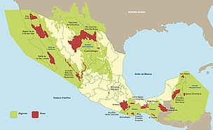

WWF o Fondo Mundial para la Naturaleza es la organización de conservación líder en el mundo.
Nacida en Suiza en 1961, es conocida por el logo del panda y tiene presencia en más de 100 países.
Con un enfoque científico, se distingue por una combinación de presencia local y alcance global, así como por soluciones
innovadoras que satisfagan las necesidades tanto de la gente como de la naturaleza. Para lograrlo crea sinergias de largo
plazo con diferentes sectores -gubernamental, empresarial y social-, y aplica las mejores prácticas de gobernanza y
transparencia.Con un enfoque científico, se distingue por una combinación de presencia local y alcance global, así como por soluciones
innovadoras que satisfagan las necesidades tanto de la gente como de la naturaleza. Para lograrlo crea sinergias de largo plazo
con diferentes sectores -gubernamental, empresarial y social-, y aplica las mejores prácticas de gobernanza y transparencia.
Actualmente enfoca su trabajo en 13 Iniciativas Globales, esfuerzos de gran escala con el potencial de impactar positivamente
especies y ecoregiones prioritarias, y reducir la huella ecológica de los seres humanos en el ambiente. Entre ellos están:
Amazonas, Ártico, Clima y energía, Transformación de Mercados, Tigres, Pesca Responsable, el Triángulo de Coral y la Costa este de África.
Entre sus metas apoya la recuperación y crecimiento de poblaciones de las especies más importantes desde el punto de vista ecológico,
económico y cultural. Así se enfoca, entre otros, en los grandes simios africanos,los rinocerontes africanos, los grandes felinos asiáticos,
el panda gigante, las tortugas marinas, los cetáceos marinos y el oso polar. |
|  |